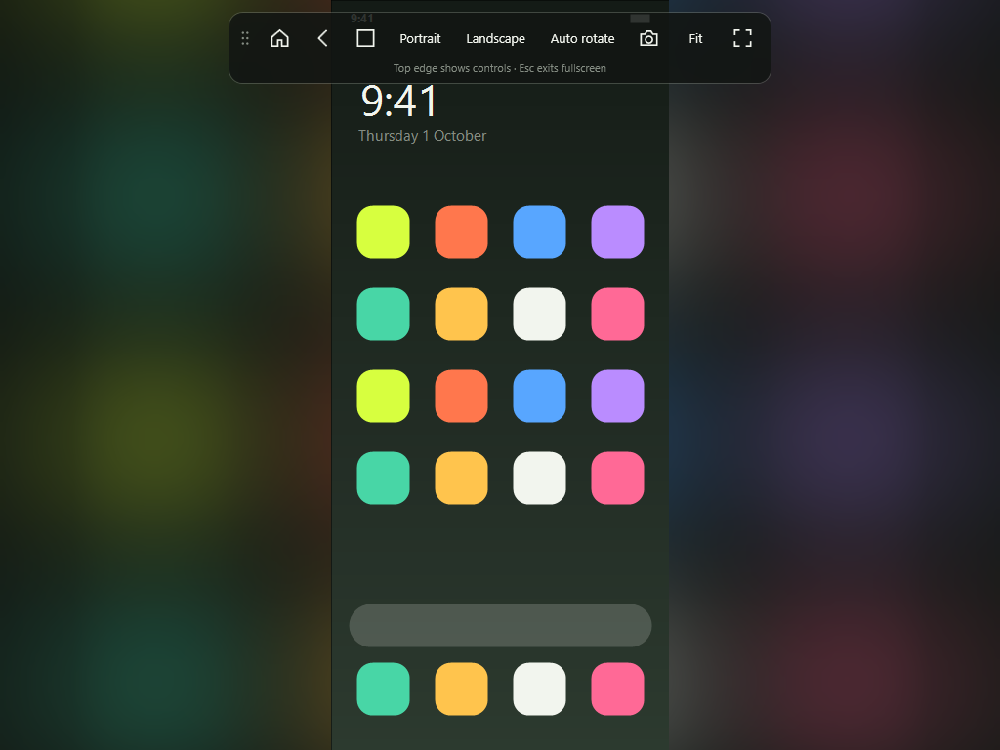
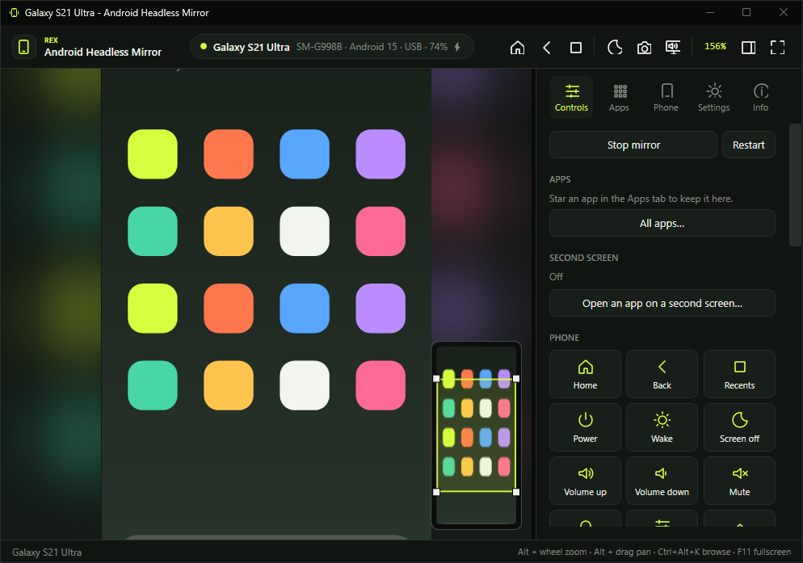
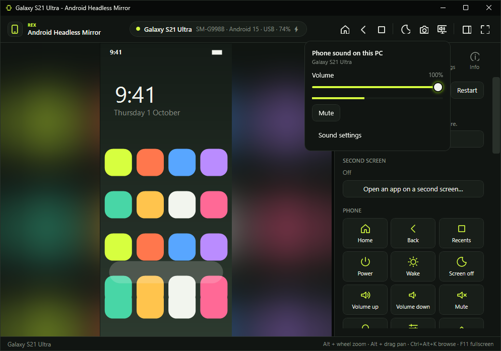
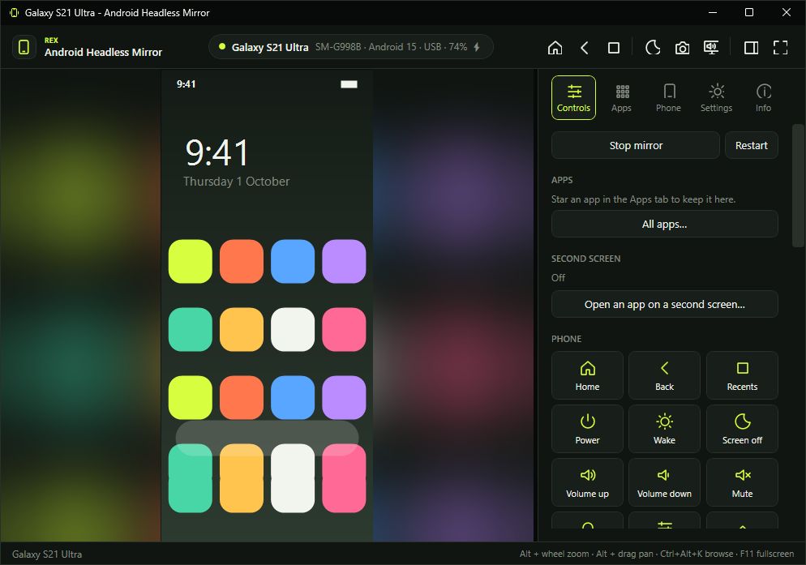
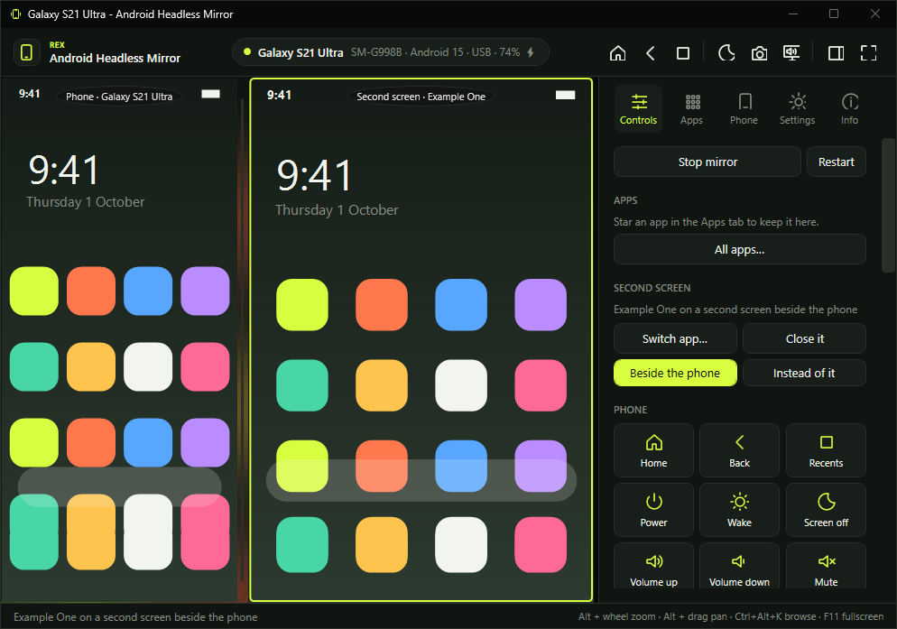
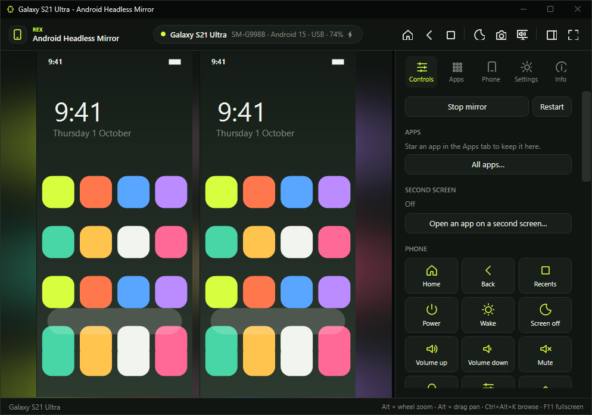
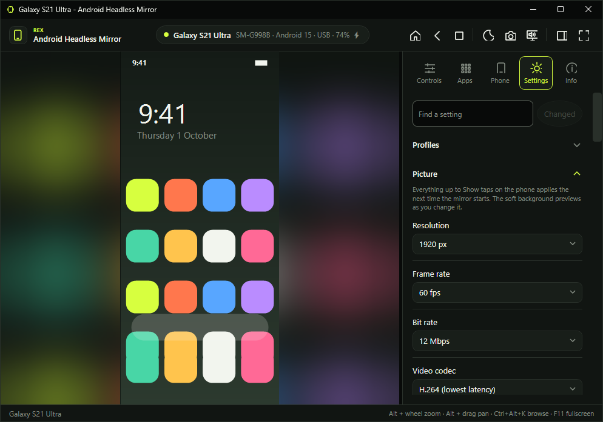
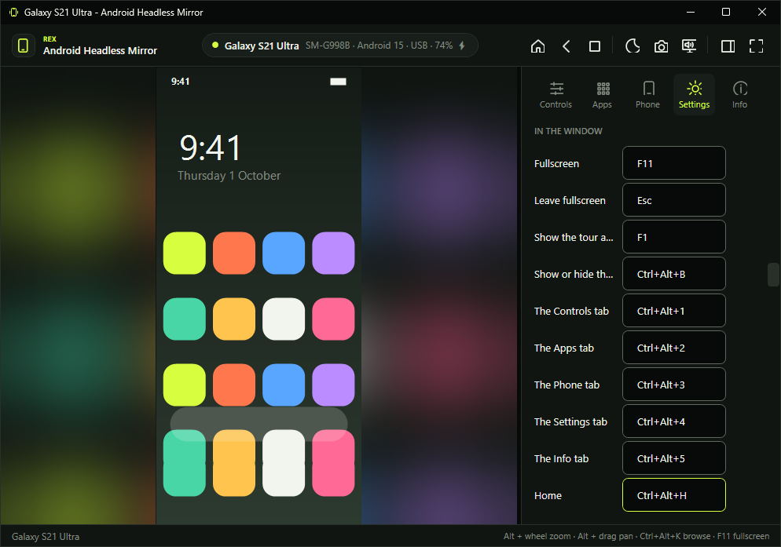

Features
Everything it does.
One window around your phone, the controls and settings it needs, and the details that make it pleasant to use every day.
The window
One window, and true fullscreen

The mirror fills the left of the window and a side panel holds Controls, Apps, Phone, Settings and Info. Drag the panel wider, put it on the left, or hide it with Ctrl+Alt+B.
F11 fills the whole display. The controls become a small translucent bar that fades when you leave it alone; drag it anywhere, and move the pointer back there to bring it out. Esc puts the window back exactly where it was.
Hands off
It opens by itself
The app waits in the tray. When an authorised phone connects over USB it wakes it, opens the mirror and turns the phone's own screen off, so it does not drain the battery or react to stray touches. If the mirror crashes it restarts; if you stop it, it stays stopped until the phone comes back.
Zoom and pan
Zoom that clicks where you see

Alt + wheel or Alt + pinch scales the real picture, so a tap always lands where you point. Alt + drag pans. A small navigator shows the whole phone with the part you are looking at framed: drag it to move around.
Precision touchpad
Two fingers are two fingers
On a Windows Precision Touchpad, two fingers become two real fingers on the phone: pinch in a map, rotate a photo, pan while pinched. Hold Alt and the same gesture moves the view on this PC instead; the phone receives nothing.
Looks
A soft background instead of black bars
The empty space around the phone shows a blurred, live copy of the picture already on screen. Opacity, blur, where it shows, size, position, a fade towards the edges, a colour wash and its frame rate are all yours to set, and every change previews as you make it.
Sound
The phone's sound on this PC

The sound button in the top bar sets how loud the phone plays on this PC, without touching the phone's own volume. Each phone remembers its level. Ctrl+Alt+PageUp and Ctrl+Alt+PageDown change it, Ctrl+Alt+Shift+M mutes it, and it can mute itself while the window is hidden or behind others, while this PC is locked, or dip while you type into the phone.
Controls
The phone's buttons, and more

Home, back, recent apps, power, screen off and on, volume, notifications, quick settings, rotation, the clipboard both ways and screenshots, as buttons in the side panel, in the top bar and on the keyboard.
Apps
Every app on the phone, one click away
The Apps tab lists what the phone can open, by each app's own name. Type to find one, click to open it, and star the ones you use most: they get tiles at the top of the Controls tab and keys of their own, Ctrl+Alt+Shift+1 to 9. Each app's menu closes it, opens its info page, or, after asking, clears its data or uninstalls it.
Files
Drop it here; it arrives on the phone
Drop files or folders onto the window, choose them from Controls, or copy them in File Explorer and press Ctrl+Alt+V. Every item shows its progress and can be cancelled or tried again. APK files install after asking, while name clashes can ask, keep both, replace or skip.
Second screen
A second screen for one app

Run an app on a display of its own, beside the phone or instead of it: a video next to a chat, an app at PC size while the phone stays upright, or the phone's screen dark while an app runs here. It is made exactly the size of its place in the window, so nothing is letterboxed; fixed sizes are there for apps that want one. Home, Back and Recents act on whichever view you are using, and Ctrl+Alt+D opens or closes it.
Profiles
Your settings for games, for films, for battery
A profile is a list of settings to switch to in one go. Save the settings you have now as one, or start from a preset: lowest latency, best picture, battery saver, presentation, gaming or quiet. Applying one changes only what is in it. One can switch on by itself in fullscreen, while the PC runs on battery, or when a phone connects, and it puts back exactly what it changed when it ends. Ctrl+Alt+F1 to Ctrl+Alt+F9 apply the first nine, and the tray menu lists them.
Two phones
Two phones side by side
A work phone and a personal one, or a phone and a test device, in one window: each in a view of its own and its own shape, each with its own session, so it keeps its own screen off and its own settings. The side panel, the keys and the buttons act on the phone you click, and Ctrl+Alt+O switches. A phone on USB and Wi-Fi at once is still one phone.
The Phone tab
The phone's own settings, from the PC
Brightness, screen timeout, forced rotation, dark mode, text size, animations, staying awake, Wi-Fi, mobile data, airplane mode, display size and density, in words rather than numbers, with a Reset that hands a setting back to Android.
Advanced
Raw Android settings, guarded
A searchable browser for the Android settings provider, with a risk label on each key. Keys that would cut this PC off from the phone are refused, so you cannot lock yourself out.
Typing
A keyboard is enough
The mirror shows up on the phone as a plugged-in keyboard, so digits, symbols and AltGr type as they should in your phone's chosen layout. Ctrl+Alt+K turns on browse mode: the arrow keys move through a feed, Enter taps, L likes, M mutes and Backspace goes back, while letters still type.
Shortcuts
Keys that work from anywhere
Ctrl+Alt+M brings the mirror up from whatever you are doing, even from the tray, and sends it away again. Any action can have a key of its own that works while the window is hidden: the next video, a screenshot, muting. Choose the keys by pressing them; a key Windows or the window already uses is refused with the reason, and AltGr is never taken.
Copies
The phone, side by side

While the phone is upright, Ctrl+Alt+N adds another live view of it beside the first, as many as fit the window at full height. Every copy takes touch and typing, and zooming one zooms them all. A copy nobody can see pauses itself, so it costs nothing until it is back in sight, and only the main view plays sound.
Lock screen
A black lock screen is still usable
Some phones mirror their secure lock screen as black. For pattern locks the app draws a nine-dot guide where Android puts the dots, with keyboard calibration as a fallback. The pattern itself is never stored or replayed.
USB
It fixes the USB connection
When Windows binds the wrong driver to the phone, or gives up reading it ("USB device not recognised"), the app notices and offers the fix, with one administrator approval. It can also fix it by itself from then on, using only Windows' own tools.
Make it yours
Every setting in one place, and a way back

Every value the app keeps has a control in Settings, and the search finds a setting by its name, its words or its name in config.json. Changed lists everything that is not as the app ships, with its value now, and puts back one setting, a whole group, or all of them. Profiles keep sets of settings to switch to in one go.
Your own keys
Any action on any key

Every key the window answers to can be moved or taken away, and every action, not only those that ship with a key, can be given one. Browse mode's single keys can be your own too. A key another action has, one Windows keeps for itself, or one that would fire while you type into the phone is refused, and the reason is said under its box. rex keys does the same from a terminal.
Your own Controls tab
Only the buttons you use, in your order
Show or hide each section of the Controls tab and move it up or down. Take tiles out of the Phone, View and gesture grids, move them, or add any action as a tile. Two to four tiles to a row, with their names or as icons alone. The floating controls can keep the order you pick them in.
The window
As small and quiet as you like
Put any action in the top bar as a button of its own, hide the top bar or the status bar, size the side panel's text from 80% to 150%, and fit the window to the phone with Ctrl+Alt+F or every time a mirror starts. Choose black around the picture for an OLED screen, keep the floating controls on screen or show them in the window too, and have the app ask before quitting while a phone is mirrored.
More of scrcpy
The picture, the sound and the session, without typing options
Choose the phone's own video encoder from the list it reports, show only part of its screen, keep the picture upright or on its side however the phone is held, start the view turned or tilted, show taps on the phone, and stop the mirror after a set time. Name screenshots and recordings your way; a name already taken is never overwritten.
Scripts and agents
Everything from the command line
rex.exe is on your PATH after installing. It drives the app and the phone from a terminal, a script or a coding agent; with --json every command answers with exactly one JSON document and never prompts.